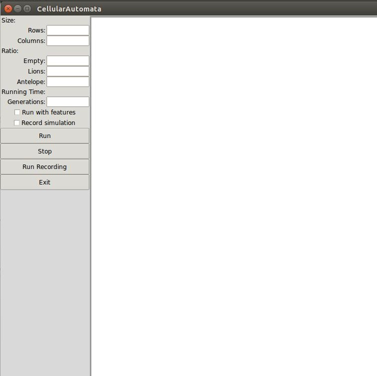
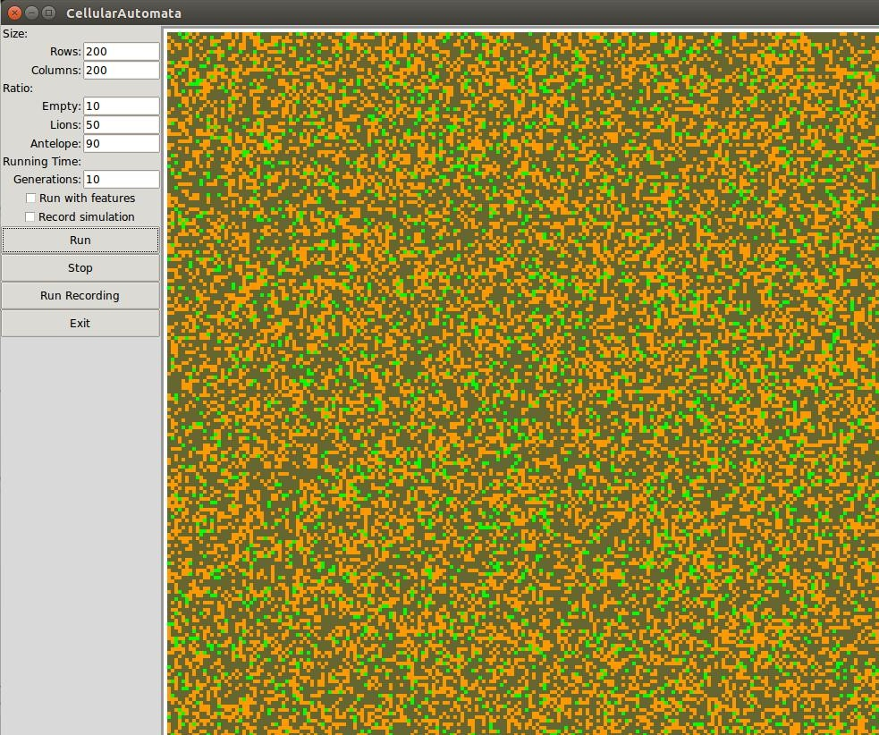
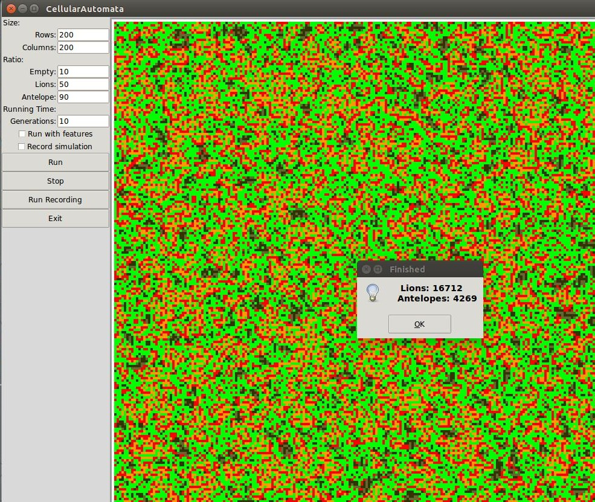

CellularAutomata
A cellular automata simulation based on Conway's Game of Life, but with different rules.
It is a world with lions and antelope. Both animals are born young and mature into adults. Antelopes can feed on open space around them, or starve. Lions can
feed on antelope around them, or starve.
The simulation has a finite area set by the user, and a starting ratio of empty space, to lions, to antelope, also set by the user.
Starting the sim

On starting the simulation the user is presented with the parameter inputs.
The user has to set the grid size and starting ratios before the simulation can begin.
The user can optionally also set how long the simulation must run, setting the simulation to run with extra features, and recording the simulation.
Running the sim
The sim starts with the specified ratio of animals randomly generated on the map.
- Orange denotes young lions
- Red is adult lions
- Brown, young antelope
- Dark brown, adult antelope
- And green - open area
Finishing the sim
At the end of the sim, or when the user interrupts it, the sim stops and displays the final count of lions and antelope.